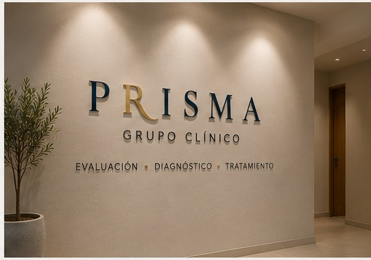
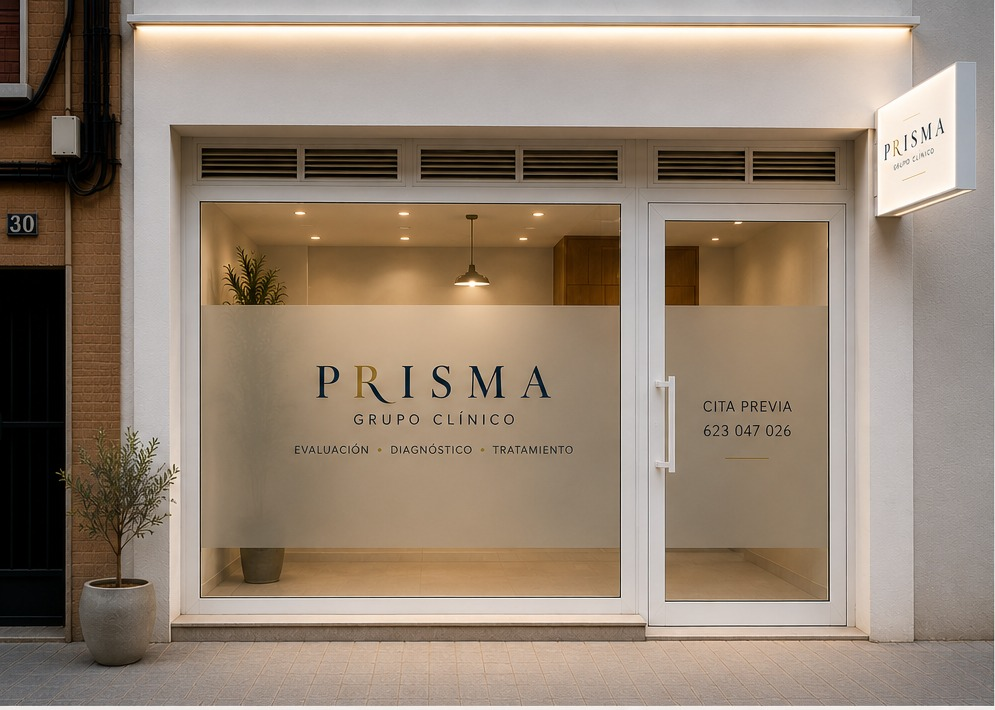
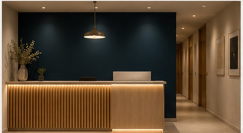

Psicología Clínica
Evaluación, diagnóstico e intervención psicológica especializada, adaptada a la etapa vital y a las necesidades de cada caso.
Ver profesionalesPRISMA GRUPO CLÍNICO
Evaluación · Diagnóstico · Tratamiento
Profesionales especializados en distintas áreas clínicas, con una práctica rigurosa y una atención individualizada. Cada caso se valora atendiendo a las necesidades, el contexto y los objetivos de la persona.

ÁREAS CLÍNICAS
Cada área está atendida por profesionales con formación y experiencia específica. La indicación se plantea de forma individual, evitando enfoques genéricos para problemas diferentes.
Evaluación, diagnóstico e intervención psicológica especializada, adaptada a la etapa vital y a las necesidades de cada caso.
Ver profesionalesValoración médica especializada, diagnóstico y tratamiento psiquiátrico con seguimiento individualizado.
Ver profesionalesEvaluación del funcionamiento cognitivo y conductual, formulación clínica y orientación del abordaje más adecuado.
Ver profesionalesValoración pericial e informes especializados para el ámbito jurídico, con criterios clínicos y técnicos rigurosos.
Ver profesionalesCÓMO TRABAJAMOS
No todas las personas necesitan la misma evaluación ni el mismo tratamiento. El profesional valora el motivo de consulta, la historia y las circunstancias actuales para definir qué intervención puede resultar más útil.
Cuando un caso se beneficia de la participación de otra área, la coordinación se plantea de forma específica y con un objetivo clínico claro.
Comprender antes de intervenir.
Atención desde el área clínica correspondiente.
Objetivos y tratamiento según necesidades reales.

EQUIPO
Cada profesional desarrolla su práctica desde una formación y experiencia específicas, con una atención centrada en comprender el caso y responder a las necesidades de cada persona.
Psicología Clínica · Neuropsicología
Psicóloga Especialista en Psicología Clínica
Máster en Neuropsicología Clínica
Colegiada P-00484
Psiquiatría
Psiquiatra. Atención a personas adultas y práctica especializada en psiquiatría clínica.
Perfil en preparación
Su fotografía y la información profesional se incorporarán cuando queden confirmadas.
RESERVA Y PAGO
Al elegir profesional accederás a su sistema individual de reserva. El pago de la consulta se realiza directamente con el profesional correspondiente.
Accede desde su perfil o desde “Reservar cita”.
Consulta la disponibilidad y selecciona tu cita.
Online en su agenda cuando esté habilitado, o en el centro en efectivo.

PRISMA
Un espacio clínico cuidado, discreto y pensado para preservar la privacidad. El centro acompaña la atención; los profesionales y el trabajo clínico son lo esencial.
CONTACTO
Atención con cita previa.
Los datos definitivos de teléfono, dirección y correo general se incorporarán antes de la publicación final.
Para proteger la privacidad, no envíes informes, diagnósticos ni documentación sanitaria a través del contacto general de la web.